(text in italics is extracted from the 2/5 Leicesters War Diary)
28/4/1916 - 7am arrived at Kingstown disembarked. Rebel fire reported at Bray . Battalion remained on reserve at Kingstown .
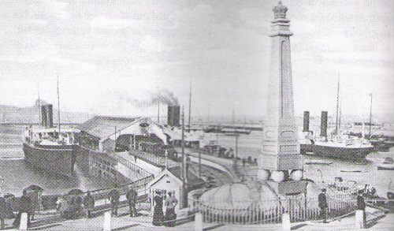
The 177th Brigade arrived during the latter stages of the Uprising. British troops had formed a cordon around central Dublin and street fighting was taking place across the city. The reception they received appeared friendly as soldiers were presented with chocolate, fruitcake and cups of tea. There was some looting in the city. On arrival the 2/5 Leicesters and their sister battalion the 2/4 Leicesters rested on the pier for several hours whilst billets were secured. Many of the men wrote their Last Will and Testament in preparation for the forthcoming fighting.
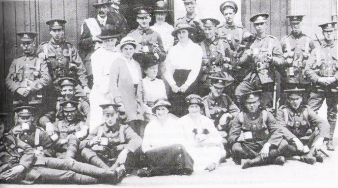
29/4/1916 - 6am Kingstown. Ordered to march to Ballsbridge Dublin arrived there 8.30am. Took over part of the line held by the 176th Infantry Brigade. Considerable amount of snipping during the day and part of the night.
The key danger came from roof top snipers and troops were involved in storming parties on rebel held positions. At Ballsbridge a cattle show was in progress at the Royal Dublin Spring Show. The show continued despite the events going on all around, the exhibits being studied by soldier experts from the farms of Lincolnshire and Leicestershire.
30/4/1916 - Ballsbridge . HQ Battalion at the Agricultural Hall. Line held from Merrion - Ballsbridge - Pembroke Road - Northumberland Road.
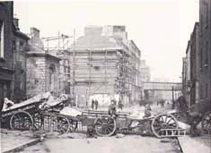
The cordon around central Dublin was slowly tightened and prisoners were collected, including De Valera and Countess Markievicz. The Uprising finally collapsed on the 30th April. Isolated sniping continued for several days however, making unguarded movement difficult.
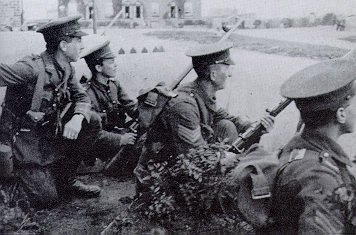
1/5/1916 - Ballsbridge. Certain amount of sniping from houses during the day and night, especially in Serpentine Avenue, Haddington Road and north of this road. Line closed in to the north and east. Houses searched, arrests made. Some sniping during the evening and night.
2/5/1916 - Ballsbridge . Line held altered: slightly closed in to the north and east. House to house searches for arms and ammunition made. Arrests made. Sniping during the evening and night, practically none during the day.
3/5/1916 - Ballsbridge . Line pushed forward towards Irishtown . Searching continued. All quiet. Train service resumed in city.
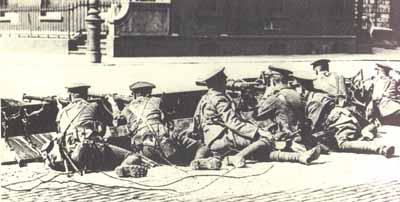
4/5/1916 - Ballsbridge. All quiet, trains running, search continued.
5/5/1916 - Ballsbridge. All quiet. Search of Irishtown continued.
6/5/1916 - Ballsbridge . District continues quiet. Searching continued. Various arms and ammunition found. Orders received to collect details and stores from England.
7/5/1916 - Ballsbridge. Sunday, battalion concentrated at Royal Society Showground. Parties went out to bathe and attend divine service. All quiet during the day.
8/5/1916 - Ballsbridge . Companies did some squad drill in the morning. Search parties visited 6 suspect houses. Mauser ammunition found in one. Others empty.
9/5/1916 - Ballsbridge . All quiet in area. Battalion remained in quarters doing light work in the morning.
In early May the rebels were executed and this sparked a violent reaction throughout the country. The 2/5 Leicesters had been employed in guard duties of railways, bridges and even the local dairy.
10/5/1916 - Ballsbridge. All quiet. Orders received to send 3 Companies to Killarney and one to Tralee
The battalion was moved out of Dublin to form 'flying columns' to tackle pockets of resistance in the Irish countryside. These columns moved from village to village searching homes and making arrests.
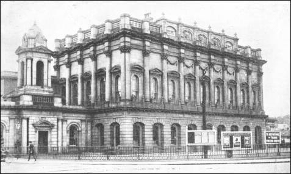
11/5/1916 - Entrained transport at 8.30am Kingsbridge Station . Remainder of battalion at 9.30. Arrived at Millstreet (Co.Kerry) after leaving C Company to proceed to Tralee . Arrived Millstreet 7.30pm, pouring rain. Tents on motor lorries broken down 8 miles away. Bivouacked in field. Heavy rain all night. Col. Northing in command of column of infantry, RFA squadron, Royal Irish Horse.
12/5/1916 - Millstreet . Wet morning, cleared midday. Tents arrived and were pitched. Spent day resting and drying kit.
13/5/1916 Battalion remained in camp. At midnight two strong parties went out to assist Police in an attempt to capture certain rebels reported to be in the neighbourhood. No arrests made.
14/5/1916 - Millstreet. Church parade. Neighbourhood quiet, orders received to move on Monday to Rathmore .
15/5/1916 - Rathmore. Marched to Rathmore in the morning, weather fair. Spent day after pitching camp, drying kit, inspecting feet, boots, socks, rifles etc.
16/5/1916 - Killarney. Marched to Killarney very hot and bad road. Arrived about 3pm and pitched camp.
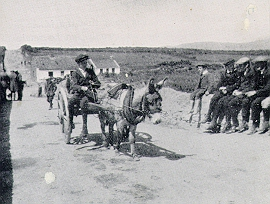
Flying columns consisted of detachments of cavalry, infantry and artillery, assisted where necessary by the local Royal Irish Constabulary (RIC). These troops carried out a series of demonstration marches along parallel roads, going as far west as Cahirciveen.
17-21/5/1916 - at Killarney no active operations.
22/5/1916 - Killorglin. Marched to Killorglin weather fair.
23/5/1916 - Glenbeigh. Marched to Glenbeigh weather fair.
24/5/1916 - Cahirsiveen. Marched to Cahirsiveen weather wet.
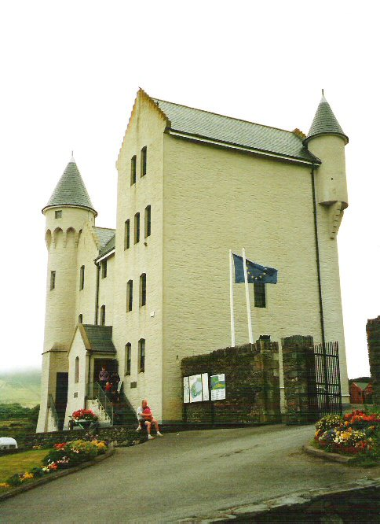
25-26/5/1916 - Cahirsiveen. No active operations.
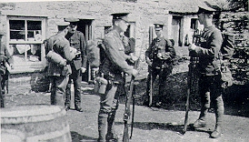
At the approach of British troops most able bodied men in the villages would flee. All movements of the flying columns were heralded by signal fires on hill tops.
27/5/1916 - Tralee. Entrained for Tralee - pitched camp. Detachment of 4 officers and 100 men to Killarney.
28/5/1916 - Tralee active operations cease.
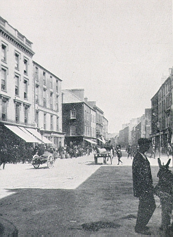
June/July - no entry
In June 1916 the command of the 177th Brigade was taken over by Brigadier General CH James. He brought with him news that the 59th Division was destined for France and would not be retained in Ireland for policing duties indefinitely. Training was resumed with a good deal of route marching. The route marching was also undertaken for political reasons, although all was generally quiet.
6/8/1916 - Tralee. Commenced march to Fermoy as far as Farranfore .
The march from Tralee to Fermoy took 7 days and covered 80 miles with the troops bivouacking each night.
7/8/1916 - Farranfore. Marched to Killarney met 4th Lincolns relieving us at Tralee.
8/8/1916 - Killarney. Marched to Rathmore.
9/8/1916 - Rathmore. Marched to Millstreet.
10/8/1916 - Millstreet. Marched to Banteer.
11/8/1916 - Banteer . Marched to Mallow.
12/8/1916 - Mallow. Marched to Castletownroche.
13/8/1916 - Castletownroche. Marched to Fermoy (New Barracks).
13/8/1916 - 5/1/1917 - Fermoy.
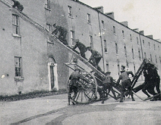
At Fermoy the battalion underwent training in trench warfare using specially constructed trenches. Live ammunition was used and there was instruction in wiring and 'reliefs'. The gorse laden hill called Corrin Mountain was used for battle practise. It was also during August 1916 that Fermoy suffered a serious flood as the River Blackwater burst its banks and two members of the 2/5 Leicesters lost their lives.
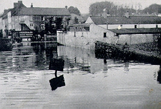
There were numerous inspections including one by Field Marshal Sir John French on August 17th and General Sir John Maxwell on August 28th. There was concern that policing duties had interfered with the Divisions training for the front. The situation in Ireland had meant that the battalions had been stationed far apart. Friction existed between the Divisional Headquarters, who maintained that their chief task was to train for war, and the local Military Authorities, who considered the priority to be reinforcement for policing duties. The battalions had also been called upon to provide drafts for units in France. There had also been changes in command with territorial officers being replaced by regulars who had already seen service overseas.
5/1/1917 - Fermoy. Entrained for North Wall (Dublin) en route to Fovant
On January 6th the battalion left Ireland for Salisbury Plain, enroute to France.
6/1/1917 - North Wall. Crossed to Holyhead on SS Ulster arrived Fovant in 2 trains about 7pm.
{kind=link}